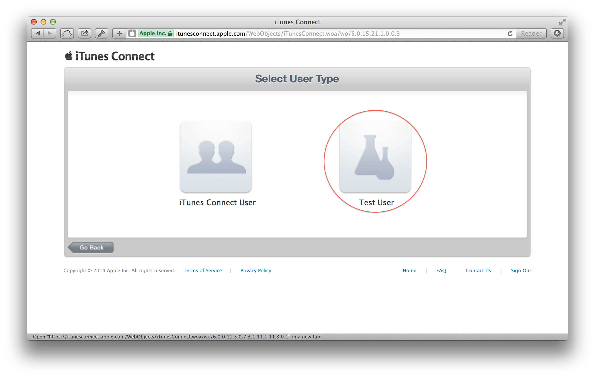
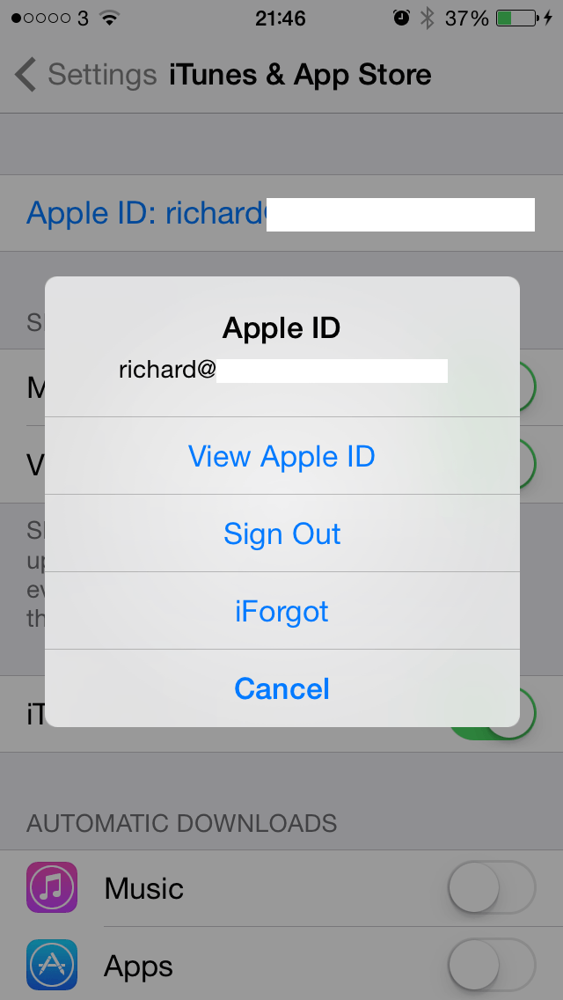
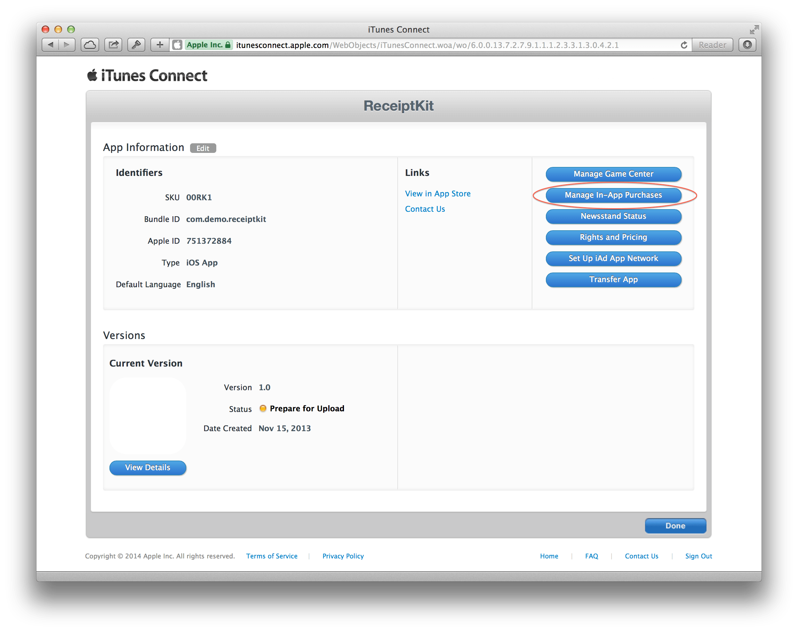
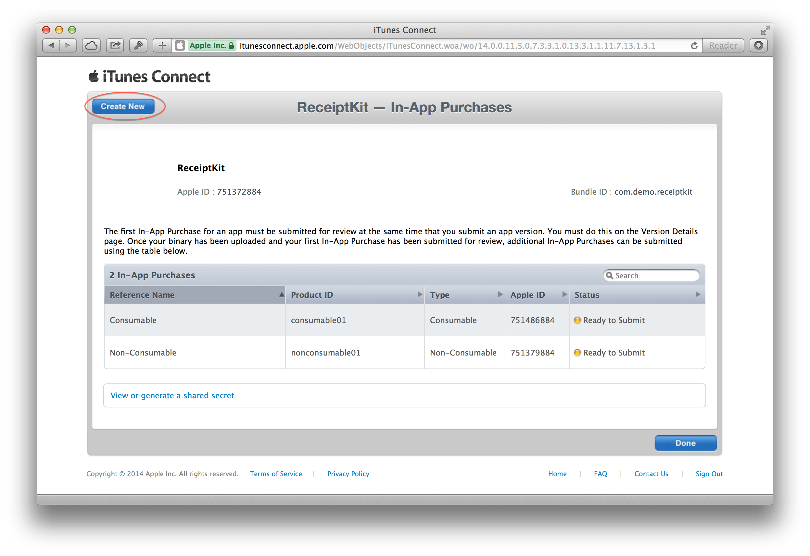
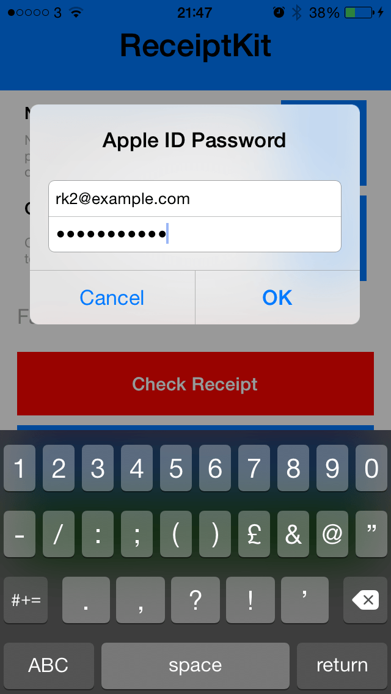
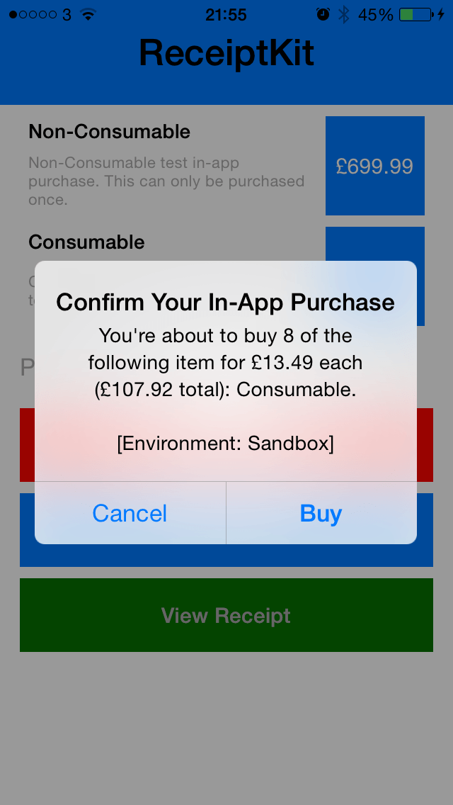

ReceiptKit
Simple StoreKit receipt validation and processing for iOS 7. This only supports the universal receipt format.
Follow the ReceiptKit Twitter account for code updates and news.
Receipt Data
Under iOS 7 receipt data can be accessed like this:
NSURL *receiptURL = [[NSBundle mainBundle] appStoreReceiptURL];
NSData *receipt = [NSData dataWithContentsOfURL:receiptURL];
Apple Root Certificate
You should download your own version of the CA root certificate:
See: http://www.apple.com/certificateauthority/
Certificate can be found here: http://www.apple.com/appleca/AppleIncRootCertificate.cer
Usage
To verify a receipt and decode the payload:
NSData *receipt = ..., cert = ...
RTKReceiptParser *parser = [[RTKReceiptParser alloc] initWithReceipt:receipt certificate:cert];
BOOL isBundleIDValid = [parser isReceiptValidForDevice:@"com.example-corp.app-name"];
Access the purchase info:
parser.purchaseInfo
Getting Started
This is just a stand alone project for now. You should replace the receipt file with your own to test it.
isReceiptValidForDevice: returns a BOOL if the receipt data is valid and accessing purchaseInfo will create an RTKPurchaseInformation object.
The properties of this object can be used to query the receipt and any in-app purchases (IAP).
Let me know any issues or questions; richard@empiricalmagic.com or @rjstelling
OpenSSL
WARNING: You must compile your own versions of libssl and libcrypto.
Known Issues
- Will not run under 64-bit Simulator in Xcode 5. Missing OpenSSL symbols.
Creating Your Own Demo App
In App Purchases (IPA) are tied to an apps bundle identifier and need to be set up on iTunes Connect. In addition you cannot user the Simulator to test the purchase and receipt refresh. The only real way to test IAP is to set up an app of your own.
Creating Test Users
While developing your app any IAP will be performed with in the [Sandbox]. Conection to the sandbox is handled automaticly when you app it complied with a development provisioning profile.

Log into iThues Connect and click on the "Manage Users" link.

Click on the "Test User" button.

Click on the "Add User" button in the top right.

Fill in the "Add New User" form, the password requirements are the same as for the production store.

On the device you will be testing with you must log out of the App Store. This can be done in Setting.app > iTunes & App Store, tap the Apple ID and then Sign Out.
DO NOT sign in with the newly created test user. We will sign in from within the ReceiptKit test app.
Create In App Purchase

Either create an app for testing ReceiptKit or from with in the app you intend to incorporate ReceiptKit into, click the "Manage In App Purchases" button.


If you want to use ReceiptKit demo app then you need to create 2 IAP called consumable01 and nonconsumable01. You can give these any display name, cost and description as you like but "Product IDs" neewd to be; consumable01 and nonconsumable01.
Compiling ReceiptKit Demo App
- Remember to change the bundle identifer to match that of the app you have created
- Sign out of the App Store (see above) on your test device
- Create a test user (if you have not already, see above)
- Run the app on the test device
- If you have set up the IAP correctly the display names, cost and description will be loaded into the app
- Tapping a button next to an IAP will prompt you to sign in:
--

- Tap "Use Existing Apple ID" and enter the email and password of the test user set up above -- 
- If all is working the App will ask you to confirm the purchase (in Sandbox mode) -- 
- If no errors occur you can tap "Check Receipt" to validate the receipt (you can only do this once per session unless you compile your own version of OpenSSL).
- Tap "View Receipt" to see some info about the receipt.
Got-Yas
- If you create a consumable IAP this wil be removed form the receipt if you refresh the receipt.